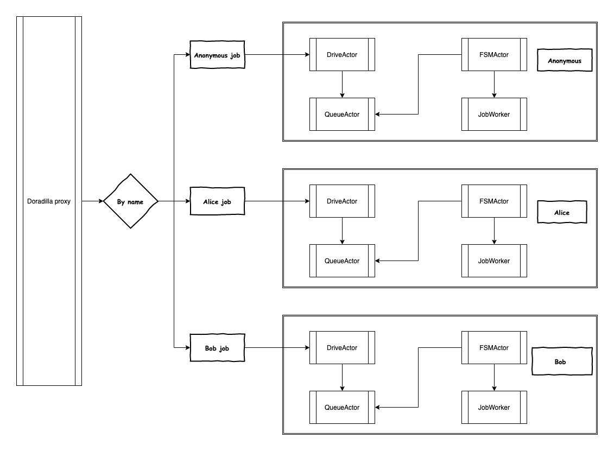

Named job
What’s named job
By default doradilla will create a cluster based JobApi to process anonymous job at initialization stage.
When received a named job, the doradilla will create a named JobApi to handled the job.

The code implementation see Named job Runner:
private def getNamedJobApi(jobName:String):JobApi={
namedJobApiMap.get(jobName) match {
case Some(jobApi) => jobApi
case _=> val jobApi: JobApi = new JobApi(Some( getActorSystem()))
namedJobApiMap +=(jobName ->jobApi)
jobApi
}
}
def runNamedProcessCommand(processJob: JobMsg,
jobName:String,
timeout: Timeout = ConstVars.longTimeOut,
priority: Option[Int] = None)(implicit ex: ExecutionContext): Future[JobResult] = {
val jobApi = getNamedJobApi(jobName)
val receiveActor = jobApi.actorSystem.actorOf(ReceiveActor.receiveActorProps, CNaming.timebasedName("Receive"))
val processJobRequest = JobRequest(processJob, receiveActor, jobApi.processTranActor, priority)
getProcessCommandFutureResult(processJobRequest, jobApi.defaultDriver, receiveActor,timeout)
}Usage
package app
import doracore.ActorTestClass
import doracore.core.msg.Job.{JobMsg, JobStatus}
import doracore.core.msg.Job.JobStatus.JobStatus
import doracore.util.ProcessService.ProcessResult
import doracore.util.{ProcessService, ProcessServiceSpec}
import doracore.vars.ConstVars
import doradilla.back.BackendServer
import doradilla.conf.TestVars
import org.scalatest.Matchers
import scala.concurrent.Await
/** For app in doradilla
* Created by whereby[Tao Zhou](187225577@qq.com) on 2019/12/14
*/
class NamedJobRunnerSpec extends ActorTestClass with Matchers {
override protected def beforeAll(): Unit = {
super.beforeAll()
ProcessService.nameToClassOpt = ProcessServiceSpec.safeProcessServiceNameToClassOpt
}
import scala.concurrent.ExecutionContext.Implicits.global
val timeout = ConstVars.timeout1S * 4
"Named Job Runner" should {
"start new driver when name is different" in {
val job1 = TestVars.sleepProcessJob
BackendServer.runNamedProcessCommand(job1, "job11")
val job2 = TestVars.processJob
val resultFuture = BackendServer.runNamedProcessCommand(job2, "job12")
val result = Await.ready(resultFuture, timeout)
println(result)
}
"Named Job Runner" should {
"start new driver when name is different but will failed without fsm " in {
val job1 = TestVars.sleepProcessJob
BackendServer.runNamedProcessCommand(job1, "job1")
val job2 = TestVars.processJob
BackendServer.changeFSMForNamedJob("job2", -1)
val resultFuture = BackendServer.runNamedProcessCommand(job2, "job2")
var timeOut = false
try {
val result = Await.ready(resultFuture, timeout)
println(result)
} catch {
case exception: Exception =>
timeOut = true
println(exception)
}
timeOut shouldBe (true)
}
}
"use same driver when name same" in {
println("Start same driver test")
val job1 = TestVars.sleepProcessJob
val result1Future = BackendServer.runNamedProcessCommand(job1, "job3")
val job2 = TestVars.processJob
val resultFuture = BackendServer.runNamedProcessCommand(job2, "job3")
var timeOut = false
try {
val result2 = Await.result(result1Future, timeout)
result2.result.asInstanceOf[ProcessResult].jobStatus == JobStatus.Failed
timeOut = true //For the execution failed for first
val result = Await.result(resultFuture, timeout)
println(result)
} catch {
case exception: Exception =>
timeOut = true
println(exception)
}
println("end same driver test")
timeOut shouldBe (true)
}
"use same driver when name same with increased fsm " in {
val job1 = TestVars.sleepProcessJob
BackendServer.changeFSMForNamedJob("job4", 1)
val result1Future = BackendServer.runNamedProcessCommand(job1, "job4")
val job2 = TestVars.processJob
val resultFuture = BackendServer.runNamedProcessCommand(job2, "job4")
var timeOut = false
try {
val result = Await.ready(resultFuture, timeout)
println(result)
} catch {
case exception: Exception =>
timeOut = true
println(exception)
}
timeOut shouldBe (false)
}
}
}FSMActor number control for named JobApi
For named JobApi, there will create only one FSMActor, you can increase and decrease FSMActor by use api as below:
def changeFSMForNamedJob(jobName: String, num:Int)={
val jobApi = getNamedJobApi(jobName)
if(num >0){
jobApi.defaultDriver ! FSMIncrease(num)
}else{
jobApi.defaultDriver ! FSMDecrease(Math.abs(num))
}
}
1.8.0.7.006+3-badc4257*